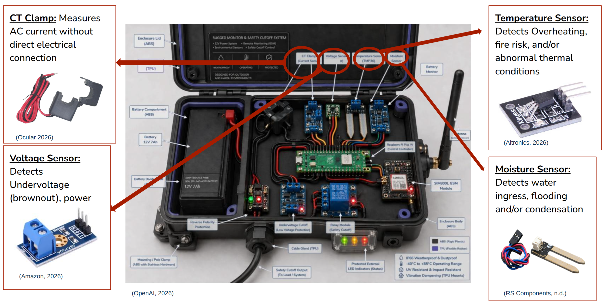
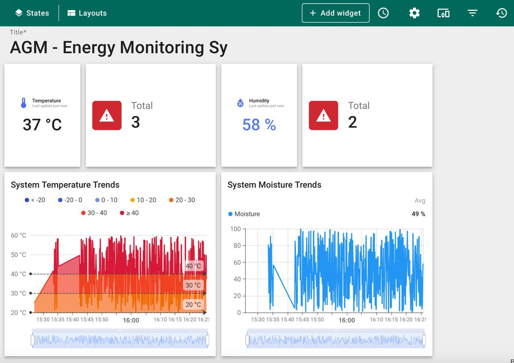
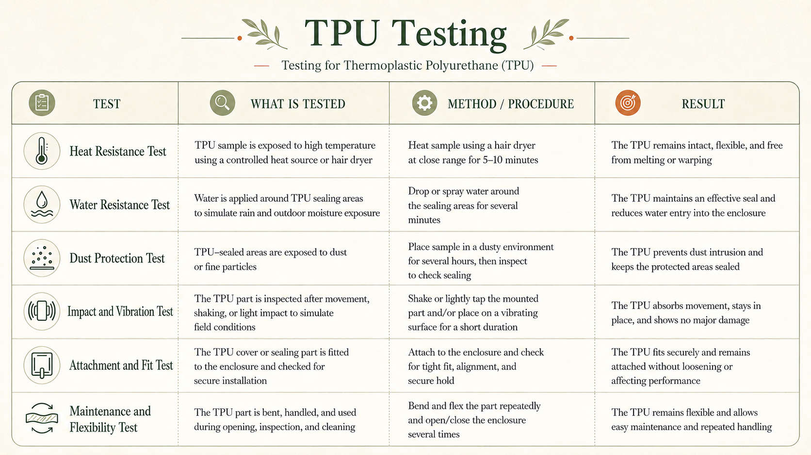
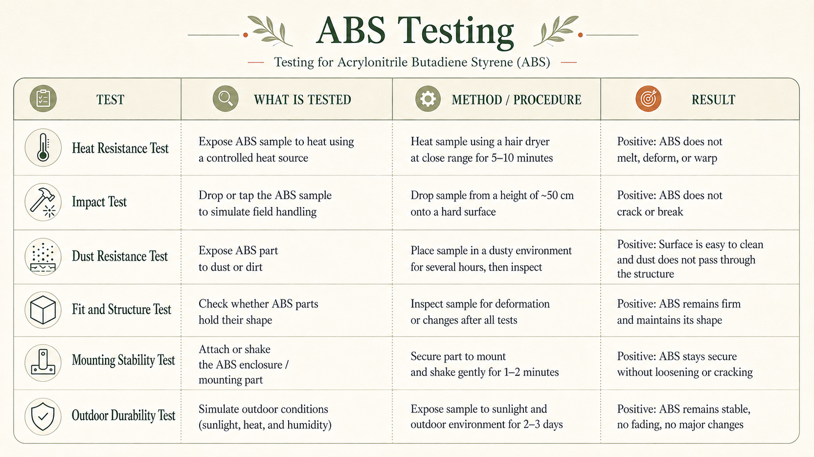

01
Raspberry Pi Pico W
The main controller — reads all sensor inputs, runs the threshold-based fault detection logic, and triggers alerts.
Team 7 (AGM) proposes an intelligent monitoring and fault detection system for Stand-Alone Power Systems. The solution is designed in response to the needs of the Port Stewart community, where energy access is shaped by remote location, limited infrastructure, environmental stress, and the need for systems that are simple, durable, and locally manageable (Australian Energy Market Commission, 2019; Centre for Appropriate Technology, 2008; Mahmud & Roy, 2025). The design also reflects Lama Lama cultural values by considering community involvement, local capability, and the importance of maintaining strong cultural connections to Country while addressing the economic and environmental constraints of operating energy systems in remote areas (Engineers Without Borders Australia, 2024; Lama Lama Organisation, n.d.).
Our solution improves the reliability and long-term performance of Stand-Alone Power Systems by enabling early fault detection, reducing the risk of equipment damage, and minimising system downtime. Stand-Alone Power Systems operate independently from the main electricity grid, so reliable monitoring is especially important in remote communities where maintenance access and technical support can be limited (Australian Energy Market Commission, 2019; Australian Renewable Energy Agency, 2023). This supports remote energy resilience by helping operators identify issues earlier and maintain more stable power for community and ranger operations.
This is achieved through continuous monitoring of key operating parameters, including current, voltage, temperature, and moisture levels. These readings help operators observe system performance and detect abnormal conditions before they become major failures. The Raspberry Pi Pico is suitable for this prototype because it provides general-purpose input/output pins and analog input capability for reading sensors and controlling connected components (Raspberry Pi Ltd., 2021). When potential issues are detected, the system automatically sends SMS alerts through the GSM module, allowing operators and maintenance teams to respond quickly before faults escalate.
By collecting and tracking this data over time, operators can better understand energy generation, storage, and consumption patterns across the system. Australian remote microgrid projects show that monitoring, control, and local visibility are important for improving reliability and supporting decision-making in isolated energy systems (Australian Renewable Energy Agency, 2021, 2022). For Port Stewart, this supports more informed decisions, improves operational efficiency, and helps the power system continue meeting community needs under changing environmental conditions.
The prototype monitors current, voltage, temperature, moisture, and battery condition in remote energy systems so faults can be identified before they become major failures. A Raspberry Pi Pico W processes the sensor data and detects conditions such as overheating, abnormal current, low battery, and moisture intrusion using threshold-based logic. This is suitable for a remote monitoring prototype because the Raspberry Pi Pico W supports sensor input and control through its general-purpose input/output and analog input pins (Raspberry Pi Ltd., 2022). When a fault occurs, the system logs telemetry data to ThingsBoard for dashboard visibility, displays LED status indicators for quick local checking, and sends SMS alerts to Rangers through Twilio’s Programmable Messaging service so maintenance teams can respond faster (Twilio, 2026). This approach aligns with Australian remote energy needs, where microgrids and stand-alone systems require reliable monitoring and local visibility to improve power reliability in remote communities (Australian Renewable Energy Agency, 2023).


The internal hardware includes sensors, power protection circuits, a Raspberry Pi Pico controller, GSM communication, relay cutoff, battery monitoring, and LED indicators. The sensors collect current, voltage, temperature, moisture, and battery data to monitor system performance and environmental conditions. This supports remote Stand-Alone Power Systems, which often use solar power, battery storage, and backup generation where grid connection is difficult (Ergon Energy Network, 2026; Australian Renewable Energy Agency, 2023). The Raspberry Pi Pico reads sensor inputs and controls connected components through its GPIO pins and analog input capability (Raspberry Pi Ltd., 2024). If unsafe conditions are detected, the relay can support safety cutoff, LEDs show system status, and the GSM communication module sends SMS alerts to maintenance staff or rangers. Australian remote monitoring products also use cellular or SMS-based alerts to send notifications from field equipment, making this approach suitable for low-bandwidth remote alerting (Datran Australia, 2026.; Telstra, 2023).

The external enclosure uses a rugged Acrylonitrile Butadiene Styrene body and flexible Thermoplastic Polyurethane sealing to protect the prototype from harsh remote conditions. Acrylonitrile Butadiene Styrene is suitable for the main body because it provides a rigid, lightweight, and impact-resistant structure for protecting internal components (SpecialChem, 2026). Thermoplastic Polyurethane is suitable for the sealing and vibration-damping areas because it offers flexibility, elasticity, abrasion resistance, and impact resistance across a wide temperature range (Australian Urethane Systems, 2026). These material properties help the enclosure resist dust, rain, heat, vibration, and possible wildlife interference during outdoor field use in remote energy monitoring deployments.
The main controller — reads all sensor inputs, runs the threshold-based fault detection logic, and triggers alerts.

Current, voltage, temperature, and moisture sensors capture the full electrical and environmental picture of the SAPS.

Sends SMS alerts over cellular networks via Twilio — no internet required, works on low bandwidth.

Supports safety cutoff when unsafe conditions are detected, and protects downstream electronics from surges.

Kept separated from electronics for safety. LED status indicators provide at-a-glance system health for Rangers in the field.
The internal hardware includes sensors, power protection circuits, a Raspberry Pi Pico controller, GSM communication, relay cutoff, battery monitoring, and LED indicators.
Sensors collect current, voltage, temperature, moisture, and battery data. Raspberry Pi Pico checks sensor values against baseline fault thresholds and identifies unsafe conditions. If a fault is detected, the relay can support safety cutoff LEDs show the system status. GSM module sends maintenance and messaging alerts to central receiver (Macbook NEO) and Ranger devices.
The system holding module is attached non-destructively to the switchboard of a Stand-Alone Power System (SAPS). The box measures several parameters including voltage, current, moisture levels, and temperature. The internal system is able to communicate through its antennae key system information, measured through baseline parameters on energy flow consistency, temperature, and more.
It includes an external antenna for GSM communication, cable entry points for power and sensor wiring, and a visible LED status window for quick field checking.
The firmware runs locally on the microcontroller and does not rely on cloud infrastructure. Decisions are made on-device using threshold logic, so the system continues to detect faults even when connectivity drops out.

The fault detection program employs threshold-based logic through quantifiable parameters to determine whether system operations fall within baseline expected ranges. Should sensor readings for voltage, current, temperature, moisture exceed or retract below expected ranges, the module collects the respective sensor information and prepares it for relay.
This streamlined logic enables rapid, responsive testing, adjustment, and accessibility when communicating information. The specified thresholds may also be adjusted following more data to reflect real field data.

Should sensor readings for fault type voltage, current, temperature, moisture exceed or retract below expected ranges, the system module returns a detailed SMS message to both Lama Lama Ranger devices containing system and fault information to request a check-up. An identical message to the central receiving device (the Macbook NEO) to ensure clear, trackable records and record-keeping.
SMS remains a suitable mode of communication despite connectivity difficulties thanks to the ability to utilise satellite networks to circumvent network limitations

ThingsBoard is used as the remote monitoring dashboard for the prototype. It displays sensor readings, device status, and logged fault events, helping users check whether the energy system is operating normally or if a fault has been detected.
Five core technologies make the prototype work together. Each component was chosen deliberately for its fit with remote, low-bandwidth operation on Country.
Remote monitoring dashboard — displays sensor readings, device status, and logged fault events.
Lightweight messaging protocol that transfers sensor data on low-bandwidth, intermittent connections.
SMS alert system — sends fault type, voltage, temperature, moisture, device ID, and location.
Circuit and logic simulator — sensor values can be changed manually to verify fault response.
Testing is divided into two areas: hardware material testing and software simulation testing. Hardware testing focuses on the physical materials used for the enclosure, specifically ABS and TPU, tested separately because they serve different purposes. ABS is used for the rigid structure, while TPU is used for flexible sealing and protection.
Software testing focuses on whether the monitoring logic works correctly in simulation. Wokwi is used to test sensor input values and fault detection logic. ThingsBoard acts as the remote monitoring interface in an energy monitoring system by receiving device data and presenting it in a clear, usable form. It helps users view system conditions in real time, track changes over time, and recognise faults quickly so they can respond without needing to inspect the equipment directly.
Software is tested through simulation before full field deployment. Wokwi is able to simulate sensor readings of voltage, temperature, moisture, current, and battery level, which are adjusted to verify fault detection. ThingsBoard confirms that readings and fault statuses display correctly on the dashboard.
TPU is tested as the flexible protective and sealing material of the enclosure — representing the soft parts such as the lid gasket, cable gland seal, antenna seal, LED window seal, and vibration-damping parts. The purpose is to confirm TPU resists moisture, dust, vibration, and repeated opening or handling.

ABS testing checks whether the rigid enclosure parts can protect the internal hardware in remote conditions. Tests focus on heat resistance, impact resistance, dust exposure, structural strength, and mounting stability — important because ABS forms the main protective shell of the prototype.

TPU is tested as the flexible protective and sealing material of the enclosure. It represents the soft parts of the prototype, such as the lid gasket, cable gland seal, antenna seal, LED window seal, and vibration-damping parts. The purpose of testing TPU is to check whether it can resist moisture, dust, vibration, and repeated opening or handling.
TPU is used for the lid gasket, cable gland seal, antenna seal, LED window seal, and vibration-damping mounts. These parts need to be flexible because they must compress, bend, and seal around small openings in the enclosure. TPU is suitable for these areas because it has rubber-like elasticity, good durability, abrasion resistance, and shock-absorbing properties, making it useful for gaskets, seals, protective covers, and anti-vibration parts (Formlabs, 2023; Protolabs, 2026). In this prototype, TPU supports the weatherproofing of the enclosure by helping reduce water and dust entry, while also cushioning the electronics from movement, vibration, and field impact.

ABS testing checks whether the rigid enclosure parts can protect the internal hardware in remote conditions. The tests focus on heat resistance, impact resistance, dust exposure, structural strength, and mounting stability. This is important because ABS forms the main protective shell of the prototype.
ABS is used for the main enclosure body, lid, internal divider wall, mounting base, and battery compartment. It forms the rigid structural part of the prototype, giving the device a strong, lightweight, and impact-resistant shell. ABS is commonly used for electronic and plastic enclosures because it offers good toughness, stiffness, dimensional stability, and electrical insulating properties (Protolabs, 2026.; SpecialChem, 2026). In this prototype, ABS supports the hard outer frame, while TPU is used for the softer protective parts such as seals, covers, and flexible edges. Together, ABS and TPU help balance structure and protection, with ABS providing strength and TPU adding flexibility where the enclosure needs to bend, seal, or absorb movement (Protolabs, 2026; Formlabs, 2023).